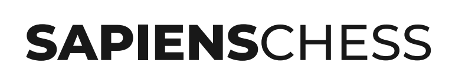
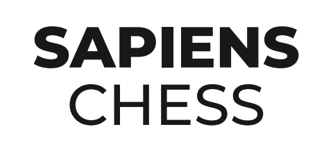

Wordmark — SAPIENS bold + CHESS light


Horizontal — для шапок, документов, печати, узких баннеров. Минимальная высота 24px.
Stacked — для квадратных пятен: hero-постер, обложки соцсетей, плакаты, сертификаты. Минимальная высота 64px.
Никогда не растягивать, не менять кернинг, не разделять. На цветных подложках — только инверт-вариант (белый).